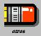

regresar
salir
continuar
A diferencia de otros lenguajes de programacion
orientados a objetos como C/C++, Java incorpora en el propio
lenguaje la gestion de errores. El mejor momento para detectar los errores es
durante la compilacion. Sin embargo practicamente solo los errores de sintaxis
son detectados durante este periodo. El resto de problemas surgen durante la
ejecucion de los programas. En el lenguaje Java, una
Exception es un cierto tipo de error o una condicion anormal que
se ha producido durante la ejecucion de un programa. Algunas excepciones
son fatales y provocan que se deba finalizar la ejecucion del programa.
En este caso conviene terminar ordenadamente y dar un mensaje explicando el tipo
de error que se ha producido. Otras, como por ejemplo no encontrar un archivo en
el que hay que leer o escribir algo, pueden ser recuperables. En este caso el
programa debe dar al usuario la oportunidad de corregir el error (indicando una
nueva localizacion del archivo no encontrado).
Bloques try y catch
En el caso de las excepciones que no pertenecen a las
RuntimeException y que por lo tanto Java obliga a
tenerlas en cuenta habra que utilizar los bloques try, catch
y finally. El codigo dentro del bloque try está
“vigilado”: Si se produce una situación anormal y se lanza por lo tanto una
excepción el control salta o sale del bloque try y pasa al bloque
catch, que se hace cargo de la situación y decide lo que hay que
hacer. Se pueden incluir tantos bloques catch como sean
necesarios, cada uno de los cuales tratará un tipo de
excepción.
Las excepciones se pueden capturar individualmente o en
grupo, por medio de una superclase de la que deriven todas
ellas.
El bloque finally es opcional. Si se
incluye sus sentencias se ejecutan siempre, sea cual sea la excepción que se
produzca o si no se produce ninguna. El bloque finally se ejecuta
aunque en el bloque try haya un
return.
Este es un programa simple de cómputo de líneas que utiliza el
LineNumberInputStream para realizar la cuenta. En general, sólo las situaciones
más simples necesitarán que se utilice un LineNumberInputStream en los programa.
Corra el programa y observe la forma en que se utiliza try y
catch
Import
java.io.*;
Public class
LineCounbter{
Static LineNumberInputStream m_istreamLineNum;
Public static void main (String astrArgs[]){
If(1 !=astrArgs.length) {
System.err.println(“Error de
utilización: \n LineCounter
<arch-entrada>”);
System.exit(-1);
}
try{
FileInputStream is = new
FileInputStream(astrArgs[0]);
M_istreamLineNum = new LineNUmberInputStream (is);
}catch (Exception
e){
System.err.println(“Error:\n Al leer
el archivo de entrada “+
AstrArgs[0];
System.exit(-1);
Try{
while(-1 ¡=m_istreamLineNum.read()0);
} catch (Exception
e){
System.err.println(“Error:\n Al leer
del archivo de entrada.”);
Syetem.exit(-1);
}
System.out.println(“Recuento de líneas terminado. El número de líneas es:
+m_istreamlineNUm.getLineNumber());
}
}
1.- Realicé un programa que implemente el método
numérico de Newton – Rapshon empleando excepciones cuando sea
necesario.
2.- Desarrolle un programa de tal manera que se capture
por teclado el nombre de un animal y se de cómo salida la imagen de este junto
con su clasificación (mamífero, insecto, herbívoro), cuando no se encuentre la
imagen el software deberá de señalar el error, para que el usuario lo
corrija.
3.- Haga un programa en applet que realice una
demostración del funcionamiento de
controles y menús para las clases Label, Button, Checkbox, Scrollbar, TexField y
TextArea, List, Choice. El usuario del programa deberá incorporar opciones de
entrada, de tal manera que cuando los parámetros sean incorrectos se señale el
error adecuado.
4.- Implemente un programa para que generé la barra de
menús y submenús de tal forma que contenga las siguientes opciones: Archivo,
Edición, Ordenes, Ayuda, simule el comportamiento de selección de cada menú y
submenu, por ejemplo:
Seleccionó
Archivo-Abrir y deberá salir una caja de dialogo solicitando el nombre del
archivo, después de dar enter o aceptar en un check box, deberá aparecer un
gráfico donde un indicador de progreso de abertura del archivo. Lo anterior no
quiere decir que abra físicamente un archivo, solo hay que simular todas las
acciones pertinentes manejando excepciones.
|  regresar |
salir |
continuar |